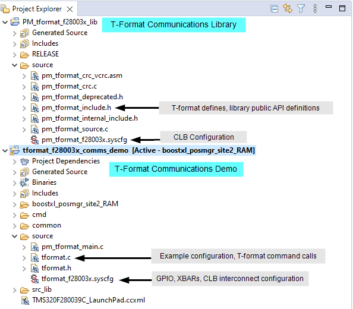
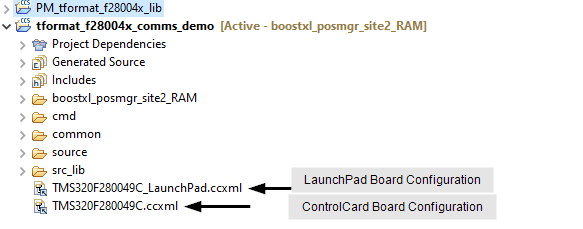
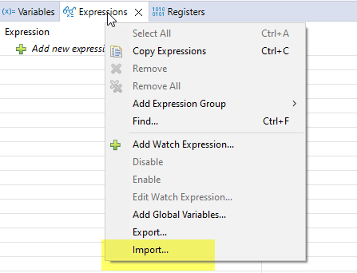
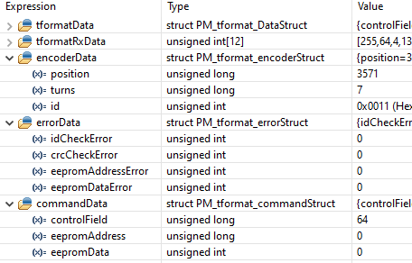

2. Build and Run the Example¶
This example provides a roadmap for integration of the library into an application.
Note
For Code Composer Studio information, refer to the Code Composer Studio User’s Guide.
2.2. Import and Run Example Project¶
The system example directory, [MC_SDK_ROOT]/solutions/boostxl_posmgr/<device>, contains a Code Composer Studio projectspec file. To import the project into CCS, follow these steps:
Install the minimum required tools. Refer to Minimum Requirements.
Import the example system demonstration.
In Code Composer Studio (CCS), click Project –> import CCS Projects..
Navigate to the system example directory:
[MC_SDK_ROOT]/solutions/boostxl_posmgr/<device>In the
ccs/tformat/directory, select thetformat_systemtest.projectspecfileClick Finish.
In the CCS Project Explorer you should now see the demo and library projects as shown in Fig. 2.1.
Note
When you import the system example, CCS will also import the associated library project.

Fig. 2.1 Code Composer Studio Project Explorer Window.¶
Select the build configuration of choice
To select the build configuration: right-click on the project
Select: build configurations and set active.
Select the build configuration.
The build configurations are:
- boostxl_posmgr_site2_RAM:
Builds the solution to load and run from RAM. The pin-out corresponds to the LaunchPad + BOOSTXL_POSMGR site2 as described in TIDM-1011 design guide.
- boostxl_posmgr_site2_FLASH:
The solution loads the demo to flash. At run-time, critical portions are copied to execute from RAM.
- tidxiddk379d_h1_RAM:
This option is available for some devices. In this case, the pinout corresponds to the H1 connector on the TMDXIDDK379D Development Kit.
Note
A LaunchPad is not available for F28388x devices. The demo can be run on either the TMDXIDDK379D Development Kit or a controlCard. For a controlCard, the user must manually connect the required pins to a BOOSTXL-POSMGR.
Select the active board configuration
Some projects include two board configuration files (.ccxml) as shown in Fig. 2.2. This occurs when the LaunchPad and ControlCard use different JTAG connections.
Right-click on the board configuration matching your hardware.
Select Set as active target configuration

Fig. 2.2 Board Configurations¶
Build the system example project
In the project manager window, Right-click on the project name
tformat_<device>_boostxl_posmgr_site2Select Rebuild Project
Observe the console window for any errors or for successful completion of the build.
Once the build completes, without errors, execute the project by selecting Run –> Debug
Populate the expressions window
Right-click on the expressions window
Select import
Browse to the location
[SYS_ROOT]/shared/debug/Select the file
tformat_vars.txtand click openAt the top of the expressions window, enable continuous refresh as shown in Fig. 2.5.

Fig. 2.3 Code Composer Studio Import Expressions.¶

Fig. 2.4 Code Composer Studio Expressions Window.¶
Note
The system example clears the tformatData structure between commands. For this reason, the structure may appear to be all zero when running the demo. To view the content, set a breakpoint before the structure is cleared.

Fig. 2.5 Enable Continuous Refresh.¶
Run the code
Press the Run/Resume button
Manually turn the shaft of the motor or encoder
Monitor the signals and variables described below:
- group TFORMAT_API_DATA_STRUCT
[TFORMAT_API_DATA_STRUCT_SNIPPET]
Information sharing structure
Variables
- PM_tformat_DataStruct tformatData
The received T-Format fields are written into this structure by the PM_tformat_receiveDataIDx() functions.
// typedef struct PM_tformat_DataStruct { uint16_t controlField; uint16_t statusField; uint16_t dataField0; uint16_t dataField1; uint16_t dataField2; uint16_t dataField3; uint16_t dataField4; uint16_t dataField5; uint16_t dataField6; uint16_t dataField7; uint16_t crcField; uint16_t crcCheck; uint16_t eepromAddressField; uint16_t eepromWrDataField; uint16_t eepromRdDataField; volatile bool dataReady; uint16_t fifoLevel; } PM_tformat_DataStruct; //
- See
The functions which populate the tformatData fields are:
Note
For debug, set this structure to a known value before calling one of these functions. This is not required, but can be helpful since these functions do not clear out unused fields.
- uint16_t tformatRxData[PM_TFORMAT_FIELDS_MAX]
The SPI interrupt service routine fills this array with the received data from the encoder.
The first PM_TFORMAT_TX_FIELDS_IDx RX FIFO outputs are skipped. These were filled during the request transmission and filled with 0xFFFF.
Each FIFO level is read, masked to include only the last 8 bits, and loaded into the corresponding tformatRxData location.
The specific PM_tformat_receiveDataIDx function then uses this array to populate the appropriate received fields in the tformatData structure.
- See
The functions which populate the tformatData fields are:
- group TFORMAT_SYS_GLOBAL_STRUCTURES
[TFORMAT_COMMAND_STRUCT_SNIPPET]
Information reporting structures used by the system example.
Variables
- PM_tformat_encoderStruct encoderData¶
The position, turns and encoder ID are updated after receiving this information back from the encoder.
// typedef struct PM_tformat_encoderStruct { uint32_t position; uint32_t turns; uint16_t id; } PM_tformat_encoderStruct; //
- See
System example function: tformat_exCommands()
API function: PM_tformat_updatePositionOrTurns()
API function: PM_tformat_updateEncoderID()
- PM_tformat_errorStruct errorData¶
The variables within this structure are set to 1 if a specific error is detected by the tformat_checkError() function.
// typedef struct PM_tformat_errorStruct { uint16_t idCheckError; uint16_t crcCheckError; uint16_t eepromAddressError; uint16_t eepromDataError; } PM_tformat_errorStruct; //
- See
System example functions:
- PM_tformat_commandStruct commandData¶
Global structure used to track the command data sent. This information can be used for error checking after the response is received.
// typedef struct PM_tformat_commandStruct { uint32_t controlField; uint32_t eepromAddress; uint16_t eepromData; } PM_tformat_commandStruct; //
- See
System example functions:
- uint32_t tformatSpiRxIsrTicker¶
Global variable which increments once each time the SPI RX interrupt is taken.